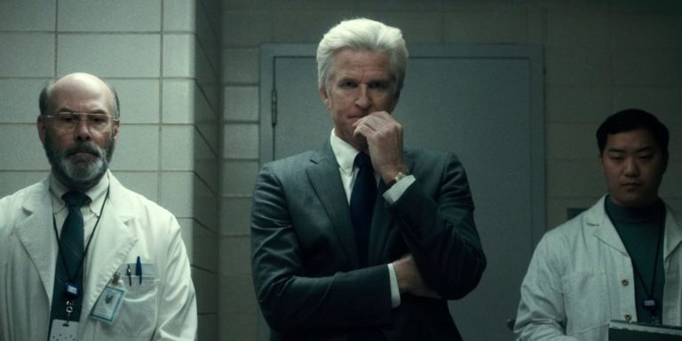

Apesar do imenso sucesso da série, ela tem os seus defeitos. Nessa resenha vamos falar parte por parte do que foi perfeito e do que poderia ter sido melhorado na série.
Número 1 - Roteiro
Quando nos referimos ao roteiro de algum filme ou série, falamos sobre a forma com que a história que deve ser contada será contada. No caso de Stranger Things, temos uma ótima história, que é muito bem desenvolvida na 1° Temporada, mas que acaba se perdendo um pouco durante a segunda.
Falando sobre a 1° temporada, temos uma história apresentada com começo, meio e fim. Apesar do final curioso quando Will cospe uma larva do mundo invertido, o roteiro da 2° temporada não nos impressionou muito, uma vez que a trama ficou difundida em muitos episódios, causando a impressão de falta de história.
Número 2 - Direção
Dirigida pelos irmãos Matt e Ross Duffer, Stranger Things tem seu toque especial em cada detalhe do trabalho dos Duffers. Cada posicionamento de câmera se mostra impecável para a sensação que se deseja transmitir. Além disso, o uso do foco e desfoque, a forma de enquadrar os personagens no quadro e a composição de cenas e ações dramáticas são realizadas de maneira genial.
Número 3 - Eleven (Onze)
Em uma trama em que não temos um único protagonista, Eleven (Millie Bobby Brown) é apresentada como personagem chave para a resolução do conflito desde o início. Ela pode ser considerada uma personagem redonda (segundo a poética de Aristóteles), uma vez que nos traz muita curiosidade acerca de sua vida, segredos, ambições e etc.
Aos poucos, conforme a trama avança, na 1° temporada, vamos descobrindo quem é, realmente, Eleven. Através de flashbacks, somos apresentados ao seu terrível passado.
Número 4 - Mike, Dustin e Lucas
Os amigos de Eleven e primeiros personagens apresentados na série, ao contrário da menina, são personagens simples. Para a construção da personalidade de cada um deles, foram utilizados clichês dos mais recorrentes em narrativas, o que eu considero um ponto bastante negativo.
Mike é o líder do grupo, o mais dinâmico, quem toma a frente nas decisões e aparta as eventuais brigas entre os demais do grupo. Ele também é quem se apaixona por Eleven. Dustin é a parte engraçada do grupo. Bobo, brincalhão e muitas vezes, desnecessário, ele fez tanto sucesso com o público que ganhou cada vez mais espaço na trama na 2° temporada.
Lucas é o mais chato do grupo, no bom sentido. Ele encana com qualquer coisa e teima em não aceitar Eleven no grupo. O curioso é que a situação vira na 2° temporada, quando Max deseja entrar no grupo e Lucas se torna o líder e o mais dinâmico, enquanto Mike se torna o chato e relutante com a entrada da menina.
Número 5 - Will
Will é o personagem mais citado na série, até agora. A primeira temporada gira em torno de encontrá-lo, enquanto a segunda se preocupa em salvá-lo. Apesar de sua imensa importância, ele não é tão evidenciado como a Eleven. O menino pode ser considerado a vítima da narrativa ou até mesmo objeto da história, uma vez que ele referencia os fatos, mas pouco influencia em sua decorrência ou resolução.
Espero que nas próximas temporadas ele tenha algum posicionamento diferente, mais significante e menos depreciado. Apesar de tudo, ele tem movimentado a série até então.
Número 6 - Xerife Hopper
David Harbour é um ator e tanto. Após Esquadrão Suicída e Caçada Mortal, ele foi parar no elenco de Stranger Things e a escolha foi certeira. Dono de muita personalidade, o xerife de Hawkings assume a frente na busca de Will na 1° temporada e também do resgate do menino na 2°.
Além de sua ótima performance durante toda a 1° temporada, ele nos surpreende mais uma vez quando esconde e toma conta de Eleven na continuação da série, mostrando não se importar com o que o laboratório da cidade pensa ou pensará sobre ele.
Número 7 - Joyce Byers
Ainda falando de atores maravilhosos em suas funções, Winona Ryder arrasa muito em Stranger Things. Cada expressão da personagem é perfeitamente realizada. Dona de um papel bastante influente na série, Winona mostra ser a escolha perfeita, uma vez que consegue cumprir a função de sensibilizar, agitar e assim mover a série pra frente.
Apesar de temos um problema e termos como resolvê-lo, a série não seria tão boa sem a personagem Joyce, sempre desesperada e tomando atitudes inusitadas para encontrar e depois salvar seu filho Will.
Número 8 - Max e Billy
Os irmãos Maxini e Billy entram na trama na 2° temporada. Apesar do mistério estabelecido com a chegada dessas duas novas personagens, elas ainda não fizeram jus a sua participação em Stranger Things.
Max descobriu tudo sobre o mundo invertido e participou da luta contra os demogorgons, mas sem ajudar significantemente. Até agora, não vimos uma explicação para a inserção da menina na trama e no grupo de Mike.
Já seu irmão Billy é mais intrigante ainda. Com seu jeito de valentão que não liga para ninguém além de si mesmo, o público realmente foi surpreendido quando seu pai aparece e o confronta, o deixando pra baixo. Apesar de toda o suspense ao redor do personagem, sua participação foi inútil e poderia ser facilmente removida da série, a menos que ele venha ser útil na próxima temporada.
Número 9 - Nancy, Steve e Jonathan
Os três amigos vivem num triângulo amoroso intrigante. Enquanto Nancy, ao longo da trajetória ao lado de Jonathan, mostra-se interessada no garoto, percebemos também o seu incessante interesse por Steve. Ao fim da 1° temporada, Nancy e Steve estão juntos, mas logo na segunda, ela se interessa mais e acaba se relacionando com Jonathan, embora Steve continue participando do elenco principal e ajudando na batalha contra os demogorgons.
Jonathan é um personagem curioso. Embora não seja protagonista como Eleven e outros já citados, ele pode ser considerado bastante complexo. Inseguro, medroso, apaixonado e curioso, o menino ajuda muito na busca de Will e também no salvamento do garoto.
Número 10 - O Laboratório de Hawkins

Algo realmente intrigante é o posicionamento do laboratório em cada temporada da série. Enquanto na primeira ele aparece como uma organização do mal que faz o que for preciso para queimar provas de seus crimes, na segunda ele parece mais inofensivo que o próprio Will.
Comandado pelo doutor Brenner, o laboratório coloca todos em choque com suas atitudes nada misericordiosas. Mas depois da morte de Brenner, a nova organização do laboratório não apresenta perigo algum, mas pelo contrário, ele torna-se aliado dos nossos protagonistas. Essa mudança brusca de papeis, eu considero erro de roteiro, portanto, é algo bastante negativo.
Número 11 - Bob
Bob é um personagem de pouco destaque na série. Namorado de Joyce e pretendente à vaga de padrasto de Will e Jonathan, ele descobre tudo no meio da segunda temporada e quando sua morte se aproxima, ele se mostra útil e pronto para ajudar.
A impressão que eu tenho é que ele foi colocado onde esteve para se sacrificar pelo grupo, já que nenhum dos protagonistas poderiam ser mortos, para não prejudicar a trama. Apesar de tudo, ele fez um bom trabalho, ambos, Bob e Sean Astin.
Número 12 - Referências
Com certeza a marca registrada de Stranger Things é o montante de referências que a série traz, desde o figurino até os posicionamentos de câmera. Isso é, de fato, incrível.
Kyle Dixon e Michael Stein foram responsáveis pela trilha da série. Aqui, referências ao compositor Jonh Carpenter, diretor de Halloween, Assalto ao 13º DP , Christine, O Carro Assassino, entre outros clássicos, são claras.
A abertura da série lembra muito TRON: Legacy e o trabalho feito pelo Daft Punk na sequência de 2009. O episódio piloto da série tem logo em sua primeira cena uma referência a Dungeons & Dragons e à toda a cultura do RPG.
Durante suas aventuras, Mike, Dustin e Lucas fazem inúmeras referências a Senhor do Anéis, The Hobbit, Star Wars e especificamente à HQ 134, dos X-Men, conhecida saga da Fênix.
A série se ambienta em 1983, um ano após E.T — O Extraterreste, dirigido por Spielberg, ir para os cinemas. No segundo episódio, o time de protagonistas tem seu primeiro contanto com Eleven, a E.T do Mundo Invertido visto em Stranger Things. A dinâmica em ambos os casos é muito semelhante.
No filme Poltergeist, um garotinha loira é atraída pela luz. Neste terceiro episódio, Holly segue as luzes até o quarto do Will, relembrando a icônica cena do filme de 1982.
Além disso, temos várias outras referências que a série traz. De forma geral, Stranger Things foi um sucesso. Apesar de alguns deslizes na 2° temporada, a série é ótima e espero que venha com muitas novidades para a próxima parte da 4ª Temporada.